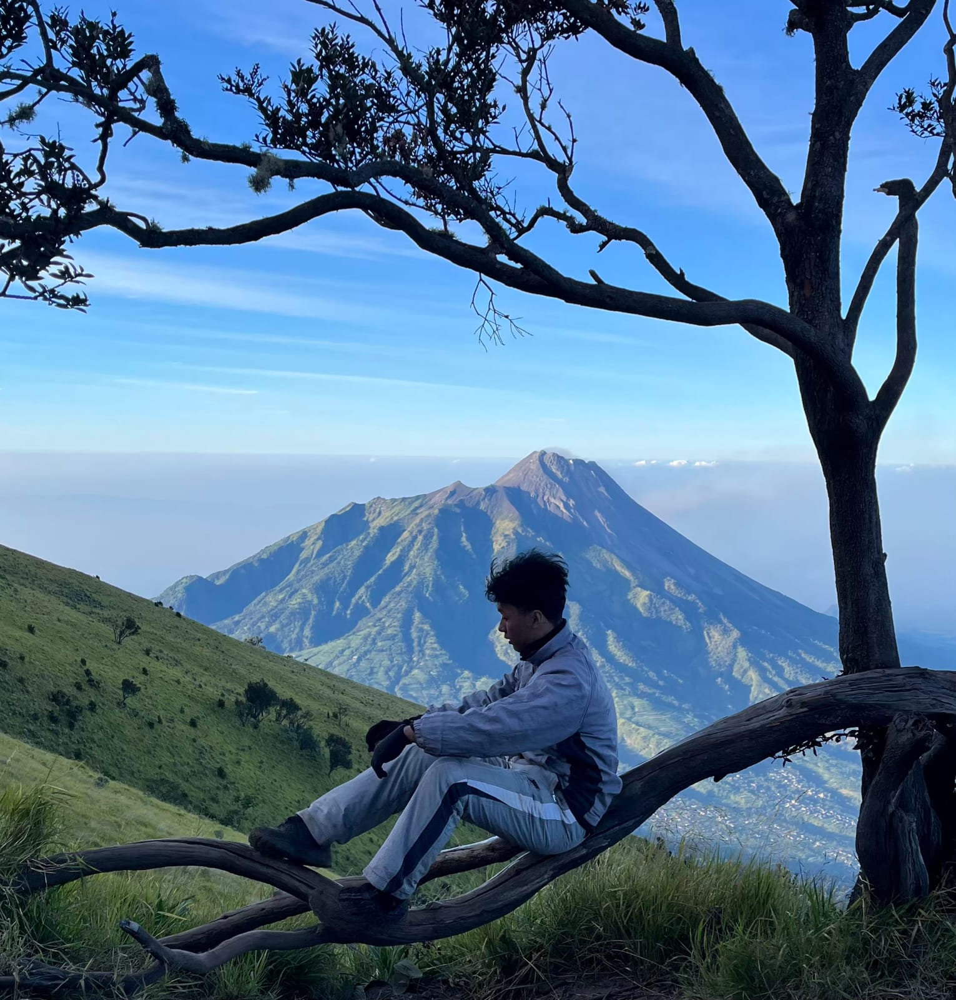

Hiking
Perjalanan menuju Magelang disuguhi pemandangan alam yang sangat indah. Di sepanjang jalan, terlihat hamparan sawah yang hijau, pepohonan yang rindang, serta pemukiman warga desa yang asri. Dari kejauhan, kemegahan Gunung Merbabu sudah mulai terlihat berhiaskan kabut tipis pagi hari. Udara sejuk khas pegunungan juga mulai terasa, membuat suasana perjalanan menjadi sangat nyaman.
Merbabu Mountain

Pendakian dimulai dari Basecamp Suwanting pada pukul 11.00 siang. Di awal jalur, kami langsung disambut oleh jajaran hutan pinus yang tinggi dan lebat. Cahaya matahari yang menerobos masuk di antara celah dedaunan membuat jalur pendakian terlihat sangat indah. Pepohonan yang rindang serta tanaman hijau di sepanjang jalan menciptakan suasana alam yang tenang dan alami.
Melakukan camp di gunung merupakan suatu pengalaman yang tidak terlupakan semasa hidup saya.

Summit Attack
Summit attack merupakan sebuah istilah pendakian yaitu perjalanan atau pendakian terakhir dari tenda/camp terakhir menuju puncak gunung. Pada pukul 02.30 dini hari, kami melanjutkan perjalanan menuju puncak dengan bantuan penerangan senter. Rasa lelah selama perjalanan seketika terbayar saat kami tiba di puncak menjelang pagi. Kami dapat menyaksikan indahnya matahari terbit dengan warna oranye keemasan, dipadukan dengan gumpalan awan putih tebal yang terbentang luas di bawah puncak. Pemandangan gunung-gunung lain yang menjulang di balik lautan awan menjadi momen paling berharga dalam pendakian ini.
Perlengkapan summit attack:
- HeadLamp
- Makanan ringan dan minuman secukupnya
- P3K
- Pakaian hangat dan penutup muka(mask)
Realita Hidup yang Baru Terasa di Gunung:
- Keluar dari Zona Nyaman Itu Ternyata Menarik
- Hidup Itu Soal Menikmati Proses, Bukan Hanya Di Puncak
- Hidup Terasa Lebih Berharga
Overall
| number | Activity | Overall |
|---|---|---|
| 1 | Tracking | 8/10 |
| 2 | Summit Attack | 10/10 |
| 3 | Tracking Down | 6/10 |